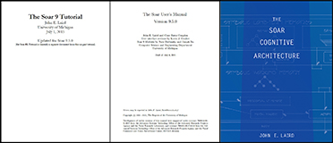

Announcement
News and Announcements
- The proceedings from the 39th Soar Workshop are now available!
- We have added a new event to this year's Soar workshop, the Soar-Cozmo hackathon! For those not familiar with Cozmo, it is a small, commercial robot that has a full suite of basic sensors and can do things like navigate to locations, manipulate blocks, generate speech and even recognize faces. Participants will spend a day building agents in Soar to compete with the agents that other participants develop. The Soar-Cozmo hackathon is intended for both new and experienced users of Soar.
- You can find more information about Cozmo here and more information about the Soar-Cozmo interface here.
- If you'd like to participate in the hack-a-thon, please e-mail John Laird.
- IMPORTANT NOTE: Because the hack-a-thon will be held on Wednesday, the Soar tutorial will start on Monday rather than Tuesday.
- We are pleased to announce that the 39th Soar Workshop will be held in Ann Arbor, Michigan from May 6-10! A thorough tutorial on using Soar and its various components is on Monday and Tuesday, May 6-7, the Soar-Cozmo Hack-A-Thon is on Wednesday May 8, and workshop presentations will be on Thursday and Friday, May 9-10. Attendance is free of cost. Please visit this page to learn more or register.
- Congratulations to Professor John Laird and Professor Paul Rosenbloom for being awarded the 2018 Herbert A. Simon Prize for Advances in Cognitive Systems! This lifetime achievement award recognizes their 30 years of research on cognitive architectures, especially their Soar project, their applications to knowledge-based systems and models of human cognition, and their contributions to theories of representation, reasoning, problem solving, and learning.
- Soar dances at the Smithsonian: LuminAI is a dome-based art installation at the National Museum of American History in which participants can engage in collaborative movement improvisation with each other and with virtual Soar-based dance partners by developed at the ADAM Lab. (event, video)
- Soar goes underwater: WPSU, Penn State's PBS affiliate, produced a news piece featuring IVER; an autonomous underwater vehicle piloted by Soar agents that is being developed at ARL. (YouTube video)
- Soar 9.6.0 is now available for download! This release of Soar is the first major release in a few years and includes hundreds of important bug fixes and code improvements and six key new features: explanation-based chunking, an instance-based model of semantic memory, a streamlined user interface, learning explanations, visualizations of memory and rule learning, and a beta version of spreading activation.
- A new updated Soar 9.6.0 manual has now been posted. The latest manual will now always be found at that link and is no longer posted within the binary distributions.
Recent Soar Publications
- Peter Lindes (2018). The Common Model of Cognition and humanlike language comprehension, Postproceedings of the 9th Annual International Conference on Biologically Inspired Cognitive Architectures.
- Preeti Ramaraj and John E. Laird (2018). Establishing Common Ground for Learning Robots, RSS 2018: Workshop on Models and Representations for Natural Human-Robot Communication. Pittsburgh, PA.
- Bryan Stearns and John E. Laird (2018). Modeling Instruction Fetch in Procedural Learning , Proceedings of the 16th International Conference on Cognitive Modelling (ICCM). Madison, WI.
- Jule Schatz, Steven J. Jones, and John E. Laird (2018). An Architecture Approach to Modeling the Remote Associates Test , Proceedings of the 16th International Conference on Cognitive Modelling (ICCM). Madison, WI.
- Aaron Mininger and John E. Laird (2018). Interactively Learning a Blend of Goal-Based and Procedural Tasks , National Conference on Artificial Intelligence, AAAI-2018.
- John E. Laird and Shiwali Mohan (2018). Learning Fast and Slow: Levels of Learning in General Autonomous Intelligent Agents , National Conference on Artificial Intelligence, AAAI-2018. Senior Track, Winner of Blue Sky Award.
- Christian Lebiere John E. Laird, Christian Lebiere, and Paul S. Rosenbloom (2017). A Standard Model for the Mind: Toward a Common Computational Framework across Artificial Intelligence, Cognitive Science, Neuroscience, and Robotics , AI Magazine 38(4).
- Lauren Naylor and John E. Laird (2017). Opportunities and Challenges for Incorporating Runtime Ethical Constraints into a Learning Agent . Ann Arbor, Michigan.
- Chien Van Dang, Tin Trung Tran, Ki-Jong Gil, Yong-Bin Shin, Jae-Won Choi, Geon-Soo Park, and Jong-Wook Kim (2017). Application of Soar Cognitive Agent Based on Utilitarian Ethics Theory for Home Service Robots. Proceedings of the 14th International Conference on Ubiquitous Robots and Ambient Intelligence (URAI). Jeju, Korea.
- Peter Lindes, Aaron Mininger, James R. Kirk, and John E. Laird (2017). Grounding Language for Interactive Task Learning. Proceedings of the 1st Workshop on Language Grounding for Robotics at ACL. (Supplemental Material).
- Bryan Stearns, Mazin Assanie, and John E. Laird (2017). Applying Primitive Elements Theory For Procedural Transfer in Soar. Proceedings of the 15th International Conference on Cognitive Modelling (ICCM). Warwick, UK.
- Peter Lindes and John E. Laird (2017). Ambiguity Resolution in a Cognitive Model of Language Comprehension. Proceedings of the 15th International Conference on Cognitive Modelling (ICCM). Warwick, UK.
- Peter Lindes and John E. Laird (2017). Cognitive Modeling Approaches to Language Comprehension Using Construction Grammar. Proceedings of The AAAI Spring Symposium on Computational Construction Grammar and Natural Language Understanding.
Welcome to the Soar Home Page
What is Soar?
Soar is a general cognitive architecture for developing systems that exhibit intelligent behavior. Researchers all over the world, both from the fields of artificial intelligence and cognitive science, are using Soar for a variety of tasks. It has been in use since 1983, evolving through many different versions to where it is now Soar, Version 9.
We intend ultimately to enable the Soar architecture to:
- work on the full range of tasks expected of an intelligent agent, from highly routine to extremely difficult, open-ended problems
- represent and use appropriate forms of knowledge, such as procedural, semantic, episodic, and iconic
- employ the full range of problem solving methods
- interact with the outside world, and
- learn about all aspects of the tasks and its performance on them.
In other words, our intention is for Soar to support all the capabilities required of a general intelligent agent.
The ultimate in intelligence would be complete rationality which would imply the ability to use all available knowledge for every task that the system encounters. Unfortunately, the complexity of retrieving relevant knowledge puts this goal out of reach as the body of knowledge increases, the tasks are made more diverse, and the requirements in system response time more stringent. The best that can be obtained currently is an approximation of complete rationality. The design of Soar can be seen as an investigation of one such approximation. Below is the primary principle which is the basis of Soar's design and which guides its attempt to approximate rational behavior.
- All decisions are made through the combination of relevant knowledge at run-time. In Soar, every decision is based on the current interpretation of sensory data, the contents of working memory created by prior problem solving, and any relevant knowledge retrieved from long-term memory. Decisions are never precompiled into uninterruptible sequences.
For many years, a secondary principle has been that the number of distinct architectural mechanisms should be minimized. Through Soar 8, there has been a single framework for all tasks and subtasks (problem spaces), a single representation of permanent knowledge (productions), a single representation of temporary knowledge (objects with attributes and values), a single mechanism for generating goals (automatic subgoaling), and a single learning mechanism (chunking). We have revisited this assumption as we attempt to ensure that all available knowledge can be captured at runtime without disrupting task performance. This is leading to multiple learning mechanisms (chunking, reinforcement learning, episodic learning, and semantic learning), and multiple representations of long-term knowledge (productions for procedural knowledge, semantic memory, and episodic memory).
Two additional principles that guide the design of Soar are functionality and performance. Functionality involves ensuring that Soar has all of the primitive capabilities necessary to realize the complete suite of cognitive capabilities used by humans, including, but not limited to reactive decision making, situational awareness, deliberate reasoning and comprehension, planning, and all forms of learning. Performance involves ensuring that there are computationally efficient algorithms for performing the primitive operations in Soar, from retrieving knowledge from long-term memories, to making decisions, to acquiring and storing new knowledge.
For further background on Soar, we recommend The Soar Cognitive Architecture Laird, J. E.(2012), The Soar Papers: Readings on Integrated Intelligence, Rosenbloom, Laird, and Newell (1993), A Gentle Introduction to Soar: 2006 update, and Unified Theories of Cognition, Newell (1990). Also available are Soar: A Functional Approach to General Intelligence and Soar: A comparison with Rule-Based Systems. A full list of publications is available on the Soar publications page. Entries on the Soar Knowledge Base and the older Soar FAQ also provide answers to many common questions about Soar.
We would like to extend a special thank you to DARPA, ONR and AFOSR for their continued support of Soar and projects related to Soar.
Getting Started
If you are new to Soar and just getting started, please check out the Soar Tutorial page here . It includes a binary distribution of Soar 9.6.0, several test environments, demo agents, the Soar manual and a nine-section tutorial that will touch on all the core aspects of Soar, from basic concepts like rules and the decision cycle to advanced topics like chunking, reinforcement learning, episodic and semantic memory.
The offical Soar manual can be found here.
Soar-related publications can be found here.
A more detailed exploration of Soar can be found in J.E. Laird's 2012 book, The Soar Cognitive Architecture. Available from Amazon and MIT Press.
If you have questions about running Soar, writing Soar agents or even building Soar from source code, you can send a message to the soar-help mailing list, which is read by many helpful members of the community.
- First join the mailing list at this page
- Then send your question to soar-help@googlegroups.com